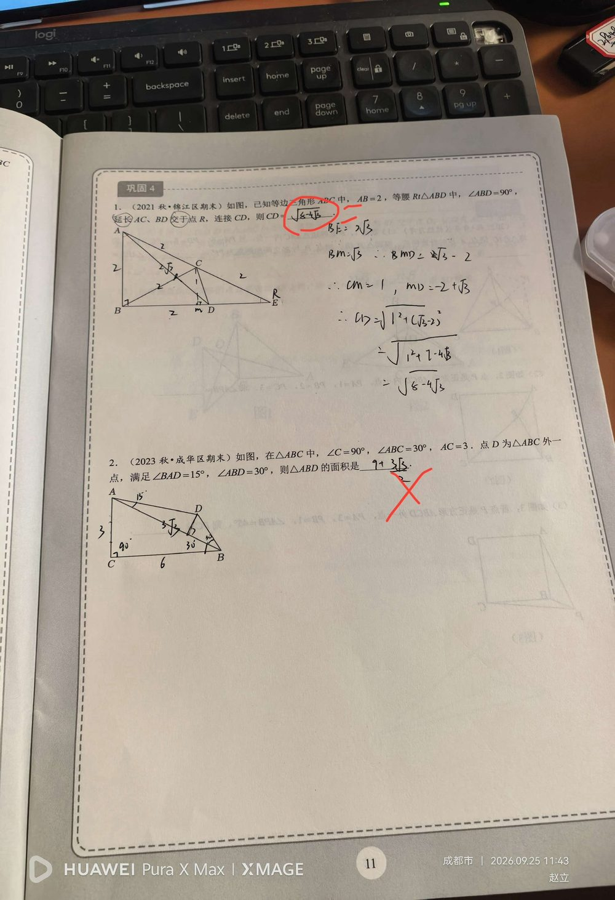

① △ABC 中 ∠C = 90°，∠ABC = 30°，AC = 3；② 由 30° 角性质可得 AB = 6，BC = 3√3；③ D 在 △ABC 外，∠BAD = 15°，∠ABD = 30°。
求 △ABD 的面积。（若琳答 9 + 3√3，红笔判错；正确答案 (9/2)(√3 − 1) = 4.5√3 − 4.5 ≈ 3.29）
【第一步：先定 AB】 在 Rt△ABC 中，∠C = 90°，∠ABC = 30° ⇒ AC 是 30° 角所对的边 ⇒ AB = 2AC = 「6」（30° 所对直角边 = 斜边的一半）。 【第二步：在 △ABD 中确定各角】 ∠ADB = 180° − ∠BAD − ∠ABD = 180° − 15° − 30° = 「135°」。 【第三步：用正弦定理求 AD】 AD / sin∠ABD = AB / sin∠ADB ⇒ AD / sin30° = 6 / sin135° ⇒ AD = 6 × (1/2) ÷ (√2/2) = 3 × 2/√2 = 「3√2」。 【第四步：用两边夹角求面积】 S△ABD = ½ × AB × AD × sin∠BAD = ½ × 6 × 3√2 × sin15° 其中 sin15° = (√6 − √2)/4 ⇒ S = 9√2 × (√6 − √2)/4 = 9(√12 − 2)/4 = 9(2√3 − 2)/4 = 「(9/2)(√3 − 1) = 4.5√3 − 4.5 ≈ 3.29」。 （也可先求 BD = 3(√3 − 1) 再用 S = ½ × AB × BD × sin30° 验证，结果相同。）
① 忘记「30° 角所对直角边等于斜边一半」，求不出 AB = 6； ② 三角形内角和算错 ⇒ ∠ADB ≠ 135°，后面全错； ③ 不会用「正弦定理」（这是本题最直接的工具），转而硬作高，越算越乱； ④ 记不住 sin15° 的值（= (√6 − √2)/4 ≈ 0.2588）； ⑤ 面积公式用错：应该是 ½×AB×AD×sin∠BAD（夹角必须取 AB 与 AD 之间的角）； ⑥ 若琳答 9 + 3√3 ≈ 14.2，比正确答案 ≈ 3.29 大 4 倍多 —— 属于量级错误（可能把面积当成周长或用了错误的高）。
① 直角三角形中 30° 角的性质（对边 = 斜边的一半）； ② 三角形内角和与角度转化； ③ 正弦定理（已知两角一边求边）； ④ 含特殊角（15°、30°、135°）的三角函数值； ⑤ 三角形面积公式的两个形式：S = ½ah 与 S = ½ab·sinC； ⑥ 二次根式化简。 📌 出处：第二讲 勾股定理综合复习 巩固4 第2题。同页第1题（等边+等腰直角求 CD = √(8−4√3)）答对，未录入。